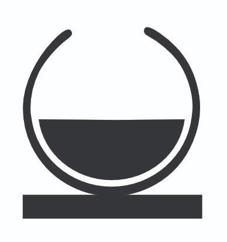
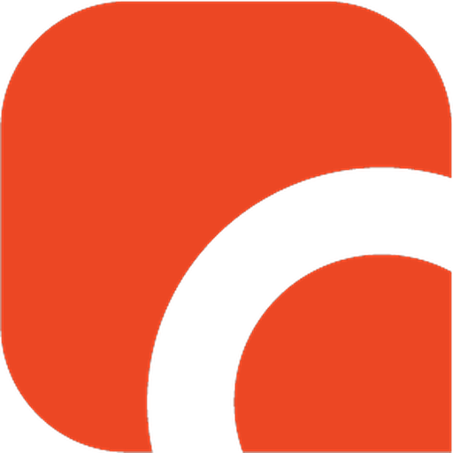

Roder Bari
R&D · Patent-pending
Solar-Powered Ceramic Membrane Distillation
A low-cost ceramic membrane coated with biogenic rice-husk silica nanoparticles for off-grid desalination and industrial effluent recovery.
Nanomaterials & Ceramic Engineering researcher at BUET, Co-Founder & COO of Gryffindor Lab, and DELI × ACI Campus Lead.
Get to knowMeet Fahim
Two ways to work together: research collaboration, or building something with Gryffindor Lab.

Functional ceramics, membrane desalination, energy storage and photonic sensors.

Product design, web & mobile engineering, cinematography and growth consulting.
I'm an undergraduate researcher in Nanomaterials and Ceramic Engineering at BUET. My lab and modeling work covers solar-driven ceramic membrane distillation (Roder Bari), mesoporous ceramic nanocomposites (AuraStone), phytosynthesized metal-oxide supercapacitor electrodes, and photonic crystal fiber sensors.
Alongside research, I co-founded Gryffindor Lab, lead the Student Committee at the Innovation Cauldron Foundation (organizing the Nano Innovation Ideas Festival 2026), and drive B2B partnerships as Business Development Executive at AMC.


 NAME-2027ICChE 2026ACS BangladeshBEAR Summit
NAME-2027ICChE 2026ACS BangladeshBEAR Summit
A low-cost ceramic membrane coated with biogenic rice-husk silica nanoparticles for off-grid desalination and industrial effluent recovery.
Digital product design, web and mobile engineering, commercial cinematography and strategic growth consulting.
A national nanotechnology and deep-tech innovation showcase at BUET, organized through the Innovation Cauldron Foundation.
A solid-state, unpowered mosquito-repellent diffuser that regulates vapor release through Fickian diffusion kinetics.
Green synthesis and electrochemical evaluation of ZnO, Co₃O₄ and NiO nanostructures for high-capacitance electrodes.
FEM modeling of birefringence, confinement loss and refractive-index sensitivity in microstructured optical fibers.
DELI × ACI Campus Lead at BUET, representing a stationery brand present in more than 145 countries.
Corporate Relations & Strategic Partnerships, Central Committee.
Convener of the Student Branch Ad Hoc Committee. Organizing the Nano Innovation Ideas Festival 2026.
B2B partnerships, commercial proposals and enterprise client acquisition (Link3, Intrix, TC Health, Lead IT).
Previously Logistics Manager (Jul – Sep 2026). On-site, Dhaka.
Technical rapporteur and closing synthesis presenter.
Corporate sponsorship lead for the department event. Former Class Representative.
Coordinator of Event Management (Career Club). Executive of Event Management & Logistics (Brainiacs).
Microstructure-Governed Design Windows for Alumina, Zirconia, and Titania: Comparative Sintering Response at 1350–1400 °C and Its Implications for Agricultural and Food-Safety Nanotechnology.
M. F. Faisal*, N. Tabassum, and N. M. Sajin. In Proc. 2nd Int. Conf. on Nano-Bio and Advanced Materials Engineering (NAME-2027).
Accepted for both oral and poster presentations at the International Conference on Chemical Engineering, on microstructural evolution and functional ceramic performance.
1st International Conference on Environmental Sustainability and Greener Earth. Sustainable nanomaterials for clean energy and environmental remediation.
B.Sc. in Nanomaterials and Ceramic Engineering (NCE)
Higher Secondary Certificate · Science
I'm open to research collaborations in functional ceramics and desalination, creative and software commissions at Gryffindor Lab, and corporate partnership inquiries.